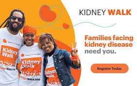
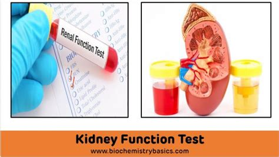

logo
|
 Annual Kidney WalkCommunity 5K walk to raise funds |
 Free Screening DayKidney function tests |
.jpg)
Donor AwarenessEducational event |
.jpg)
Nutrition WorkshopKidney-friendly diets |
Search events... |
|
Awareness Campaigns Awareness campaigns educate the public about kidney disease prevention, symptoms, and risk factors to promote early detection and healthier lifestyles. |
Fundraising Events Charity (walks, galas, auctions) raise money for research, patient support, and awareness, uniting communities to fight kidney disease through participation, donations, and sponsorships. |
Health Seminars Health seminars provide expert-led education on kidney disease management, treatments, nutrition, and research updates to empower patients and families. |
Community Engagement Community engagement connects patients, families, and supporters through local events, support groups, and volunteer opportunities to share experiences and promote kidney health awareness. |
|
2023 Kidney Health Fair Provided free kidney health screenings to 500+ attendees, identifying 15% at risk for early intervention and treatment. |
Kidney Gala Raised $150,000 to support pediatric kidney transplant programs and financial aid for families in need. |
Dialysis Patient Day Educated 200+ dialysis patients about treatment options and self-care strategies to improve quality of life |
High School Program Taught 1,200 students about kidney health, prevention, and how to recognize early warning signs. |